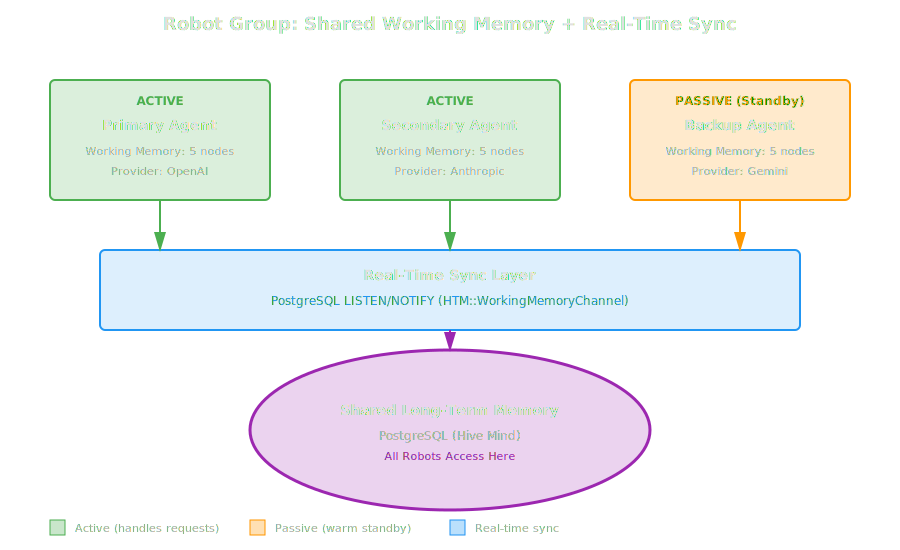
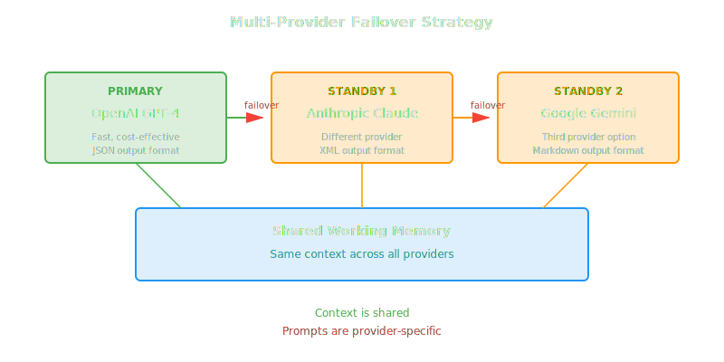

Robot Groups: Coordinated Multi-Robot Systems¶
Robot Groups extend HTM's Hive Mind architecture by adding real-time coordination, shared working memory, and automatic failover capabilities. While the Hive Mind enables knowledge sharing through a shared long-term memory database, Robot Groups take this further by synchronizing active working memory across multiple robots in real-time.
Overview¶
A Robot Group is a coordinated collection of robots that:
- Share Working Memory: All members maintain identical active context
- Sync in Real-Time: PostgreSQL LISTEN/NOTIFY enables instant synchronization
- Support Active/Passive Roles: Active robots handle requests; passive robots stay warm for failover
- Enable Dynamic Scaling: Add or remove robots at runtime

Relationship to Hive Mind¶
Robot Groups build on the Hive Mind architecture:
| Aspect | Hive Mind | Robot Groups |
|---|---|---|
| Long-Term Memory | Shared globally | Shared globally |
| Working Memory | Per-robot (isolated) | Synchronized across group |
| Synchronization | Eventual (database reads) | Real-time (LISTEN/NOTIFY) |
| Failover | Manual | Automatic |
| Scaling | Independent robots | Coordinated group |
When to Use Robot Groups
Use Robot Groups when you need:
- High availability with instant failover
- Load balancing across multiple robots
- Consistent context across all team members
- Real-time collaboration between robots
For independent robots that only need shared knowledge (not synchronized context), the basic Hive Mind architecture is sufficient.
Key Classes¶
HTM::RobotGroup¶
Coordinates multiple robots with shared working memory and automatic failover.
group = HTM::RobotGroup.new(
name: 'customer-support',
active: ['primary'],
passive: ['standby'],
max_tokens: 8000
)
Key Methods:
| Method | Description |
|---|---|
remember(content, originator:) |
Add to shared working memory |
recall(query, **options) |
Search shared working memory |
add_active(robot_name) |
Add an active robot |
add_passive(robot_name) |
Add a passive (standby) robot |
promote(robot_name) |
Promote passive to active |
demote(robot_name) |
Demote active to passive |
failover! |
Promote first passive robot |
status |
Get group status |
shutdown |
Stop listening and clean up |
HTM::WorkingMemoryChannel¶
Low-level PostgreSQL LISTEN/NOTIFY pub/sub for real-time synchronization.
channel = HTM::WorkingMemoryChannel.new('group-name', db_config)
channel.on_change do |event, node_id, robot_id|
# Handle :added, :evicted, or :cleared events
end
channel.start_listening
channel.notify(:added, node_id: 123, robot_id: 1)
channel.stop_listening
Basic Usage¶
Creating a Robot Group¶
require 'htm'
# Configure HTM
HTM.configure do |config|
config.embedding_provider = :ollama
config.embedding_model = 'nomic-embed-text'
config.tag_provider = :ollama
config.tag_model = 'llama3'
end
# Create a robot group with active and passive members
group = HTM::RobotGroup.new(
name: 'support-team',
active: ['agent-primary'],
passive: ['agent-standby'],
max_tokens: 8000
)
# Add memories to shared working memory
group.remember("Customer #123 prefers email over phone.")
group.remember("Open ticket #456 about billing issue.")
# All members (active and passive) now have these memories
# in their synchronized working memory
# Query shared context
results = group.recall('customer preferences', limit: 5, strategy: :fulltext)
# Check group status
status = group.status
puts "Active: #{status[:active].join(', ')}"
puts "Passive: #{status[:passive].join(', ')}"
puts "Working memory: #{status[:working_memory_nodes]} nodes"
puts "In sync: #{status[:in_sync]}"
# Clean up when done
group.shutdown
Scaling Patterns¶
Horizontal Scaling¶
Add more active robots to handle increased load:
group = HTM::RobotGroup.new(
name: 'high-traffic-service',
active: ['worker-1'],
max_tokens: 16000
)
# Initial setup
group.remember("Service configuration loaded.")
# Scale up as traffic increases
group.add_active('worker-2')
group.add_active('worker-3')
# New workers automatically sync existing working memory
puts group.status[:active] # => ['worker-1', 'worker-2', 'worker-3']
# All workers share the same context
# Requests can be load-balanced across any active worker
# Scale down when traffic decreases
group.remove('worker-3')
group.remove('worker-2')
Dynamic Scaling Example¶
class AutoScalingRobotPool
def initialize(group_name, min_workers: 1, max_workers: 10)
@group = HTM::RobotGroup.new(
name: group_name,
active: ["#{group_name}-worker-1"],
max_tokens: 8000
)
@min_workers = min_workers
@max_workers = max_workers
@worker_count = 1
end
def scale_up
return if @worker_count >= @max_workers
@worker_count += 1
worker_name = "#{@group.name}-worker-#{@worker_count}"
@group.add_active(worker_name)
puts "Scaled up: added #{worker_name}"
end
def scale_down
return if @worker_count <= @min_workers
worker_name = "#{@group.name}-worker-#{@worker_count}"
@group.remove(worker_name)
@worker_count -= 1
puts "Scaled down: removed #{worker_name}"
end
def handle_request(query)
# All active workers share context, so any can handle the request
@group.recall(query, strategy: :hybrid, limit: 10)
end
def shutdown
@group.shutdown
end
end
# Usage
pool = AutoScalingRobotPool.new('api-service', min_workers: 2, max_workers: 5)
pool.scale_up # Now 2 workers
pool.scale_up # Now 3 workers
results = pool.handle_request('recent user activity')
pool.shutdown
High Availability & Hot Standby¶
Basic Failover¶
group = HTM::RobotGroup.new(
name: 'critical-service',
active: ['primary'],
passive: ['standby-1', 'standby-2'],
max_tokens: 8000
)
# Primary handles requests, standbys stay synchronized
group.remember("Critical configuration loaded.")
group.remember("User session context established.")
# When primary fails...
puts "Primary failed! Initiating failover..."
# Instant failover - standby already has full context
promoted = group.failover!
puts "#{promoted} is now active"
# Service continues with zero context loss
results = group.recall('session', strategy: :fulltext)
puts "Context preserved: #{results.length} memories available"
Multi-Provider Hot Standby¶
Robots in a group do NOT need to share the same LLM provider or model. This enables powerful disaster recovery patterns where your hot standby uses a completely different provider.
Provider-Specific Prompts Required
When using different providers/models in the same group, remember that prompts must be tailored to each provider. Different models respond differently to the same prompt. The robots share memory context, not prompt templates.
# Example: OpenAI primary with Anthropic standby
class MultiProviderRobotGroup
def initialize(group_name)
@group_name = group_name
# Create the robot group
@group = HTM::RobotGroup.new(
name: group_name,
max_tokens: 8000
)
# Primary uses OpenAI
setup_openai_robot('primary-openai')
@group.add_active('primary-openai')
# Hot standby uses Anthropic (different provider!)
setup_anthropic_robot('standby-anthropic')
@group.add_passive('standby-anthropic')
# Optional: Third standby on Gemini
setup_gemini_robot('standby-gemini')
@group.add_passive('standby-gemini')
end
# Provider-specific prompt templates
PROMPT_TEMPLATES = {
openai: {
system: "You are a helpful assistant. Be concise and direct.",
format: :json
},
anthropic: {
system: "You are Claude, an AI assistant. Think step by step.",
format: :xml
},
gemini: {
system: "Provide helpful, well-structured responses.",
format: :markdown
}
}
def generate_response(query)
# Get current active robot's provider
active_name = @group.active_robot_names.first
provider = detect_provider(active_name)
# Use provider-specific prompt template
template = PROMPT_TEMPLATES[provider]
# Recall shared context (same for all providers)
context = @group.recall(query, strategy: :hybrid, limit: 10)
# Build provider-specific prompt
prompt = build_prompt(query, context, template)
# Call the appropriate LLM
call_llm(provider, prompt)
end
def failover!
promoted = @group.failover!
provider = detect_provider(promoted)
puts "Failover complete: now using #{provider} (#{promoted})"
# Context is preserved, but prompts will now use the new provider's template
promoted
end
private
def setup_openai_robot(name)
# OpenAI-specific configuration
# Note: Each robot can use different LLM settings
end
def setup_anthropic_robot(name)
# Anthropic-specific configuration
end
def setup_gemini_robot(name)
# Gemini-specific configuration
end
def detect_provider(robot_name)
case robot_name
when /openai/i then :openai
when /anthropic|claude/i then :anthropic
when /gemini|google/i then :gemini
else :openai
end
end
def build_prompt(query, context, template)
# Build provider-specific prompt
# This is where you handle the differences between providers
{
system: template[:system],
context: context.map { |c| c['content'] }.join("\n\n"),
query: query,
format: template[:format]
}
end
def call_llm(provider, prompt)
# Call the appropriate LLM API
# Implementation depends on your RubyLLM configuration
end
end
# Usage
service = MultiProviderRobotGroup.new('multi-provider-ha')
# Both OpenAI and Anthropic robots share the same working memory
service.group.remember("User prefers technical explanations.")
service.group.remember("Previous discussion was about PostgreSQL.")
# Primary (OpenAI) handles request with OpenAI-style prompt
response = service.generate_response("Explain ACID properties")
# If OpenAI goes down, failover to Anthropic
# Context is preserved, but prompts use Anthropic's style
service.failover!
response = service.generate_response("Continue the explanation")
Provider Failover Strategies¶

Cross-Process Synchronization¶
For multi-process deployments (e.g., multiple servers, containers, or worker processes), use HTM::WorkingMemoryChannel directly:
#!/usr/bin/env ruby
# worker.rb - Run multiple instances of this script
require 'htm'
worker_name = ARGV[0] || "worker-#{Process.pid}"
group_name = 'distributed-service'
# Configure HTM
HTM.configure do |config|
config.embedding_provider = :ollama
config.embedding_model = 'nomic-embed-text'
end
# Create HTM instance for this worker
htm = HTM.new(robot_name: worker_name, working_memory_size: 8000)
# Setup channel for cross-process notifications
db_config = HTM::Database.default_config
channel = HTM::WorkingMemoryChannel.new(group_name, db_config)
# Track notifications received
channel.on_change do |event, node_id, origin_robot_id|
next if origin_robot_id == htm.robot_id # Skip our own notifications
case event
when :added
node = HTM::Models::Node.find_by(id: node_id)
if node
htm.working_memory.add_from_sync(
id: node.id,
content: node.content,
token_count: node.token_count || 0,
created_at: node.created_at
)
puts "[#{worker_name}] Synced node #{node_id} from another worker"
end
when :evicted
htm.working_memory.remove_from_sync(node_id)
when :cleared
htm.working_memory.clear_from_sync
end
end
channel.start_listening
puts "[#{worker_name}] Listening on channel: #{channel.channel_name}"
# Main loop - process commands
loop do
print "#{worker_name}> "
input = gets&.strip
break if input.nil? || input == 'quit'
case input
when /^remember (.+)/
content = $1
node_id = htm.remember(content)
channel.notify(:added, node_id: node_id, robot_id: htm.robot_id)
puts "Remembered (node #{node_id}), notified other workers"
when /^recall (.+)/
query = $1
results = htm.recall(query, limit: 5, strategy: :fulltext)
puts "Found #{results.length} memories"
results.each { |r| puts " - #{r}" }
when 'status'
puts "Working memory: #{htm.working_memory.node_count} nodes"
puts "Notifications received: #{channel.notifications_received}"
else
puts "Commands: remember <text>, recall <query>, status, quit"
end
end
channel.stop_listening
puts "[#{worker_name}] Shutdown"
Run multiple workers:
# Terminal 1
ruby worker.rb worker-1
# Terminal 2
ruby worker.rb worker-2
# Terminal 3
ruby worker.rb worker-3
When any worker calls remember, all other workers instantly receive the notification and update their working memory.
Best Practices¶
1. Provider-Agnostic Memory, Provider-Specific Prompts¶
# Memory is shared (provider-agnostic)
group.remember("User is a Ruby developer with 10 years experience.")
# Prompts are provider-specific
def build_prompt(context, query, provider)
case provider
when :openai
# OpenAI prefers concise JSON output
{
messages: [
{ role: "system", content: "You are a helpful assistant. Be concise." },
{ role: "user", content: "Context:\n#{context}\n\nQuery: #{query}" }
],
response_format: { type: "json_object" }
}
when :anthropic
# Claude prefers XML structure and thinking aloud
{
system: "Think step by step. Use XML tags for structure.",
messages: [
{ role: "user", content: "<context>#{context}</context>\n<query>#{query}</query>" }
]
}
when :gemini
# Gemini handles markdown well
{
contents: [
{ role: "user", parts: [{ text: "## Context\n#{context}\n\n## Query\n#{query}" }] }
]
}
end
end
2. Monitor Sync Status¶
# Regular health checks
Thread.new do
loop do
sleep 60 # Check every minute
unless group.in_sync?
puts "WARNING: Group out of sync, initiating sync..."
result = group.sync_all
puts "Synced #{result[:synced_nodes]} nodes to #{result[:members_updated]} members"
end
stats = group.sync_stats
puts "Sync stats: #{stats[:nodes_synced]} nodes, #{stats[:evictions_synced]} evictions"
end
end
3. Graceful Shutdown¶
# Handle shutdown signals
at_exit do
puts "Shutting down robot group..."
group.shutdown
end
Signal.trap("INT") do
puts "\nReceived interrupt, shutting down..."
exit
end
4. Use Passive Robots for Redundancy¶
# Always have at least one passive robot for failover
group = HTM::RobotGroup.new(
name: 'production-service',
active: ['primary'],
passive: ['standby-1', 'standby-2'], # Multiple standbys
max_tokens: 8000
)
# Passive robots are "warm" - they have full context
# Failover is instant with no context loss
Demo Applications¶
HTM includes working examples in examples/robot_groups/:
same_process.rb¶
Single-process demo showing: - Group creation with active/passive robots - Shared memory operations - Failover simulation - Dynamic scaling - Real-time sync via LISTEN/NOTIFY
multi_process.rb¶
Multi-process demo showing: - Spawning robot workers as separate processes - Cross-process synchronization - Failover when a process dies - Dynamic scaling by spawning new processes
robot_worker.rb¶
Standalone worker process that: - Receives JSON commands via stdin - Sends JSON responses via stdout - Participates in robot group via LISTEN/NOTIFY
Related Documentation¶
- Hive Mind Architecture - Foundation for shared memory
- Multi-Robot Usage - Basic multi-robot patterns
- Working Memory - How working memory operates
- API Reference: RobotGroup - Complete API documentation
- API Reference: WorkingMemoryChannel - Low-level pub/sub API